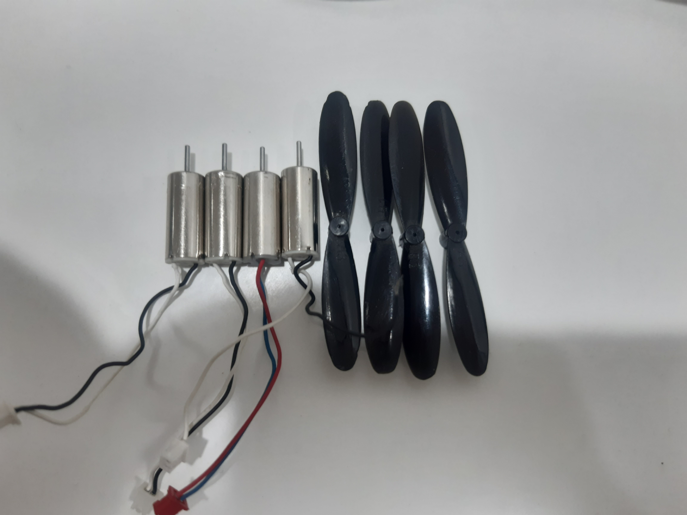
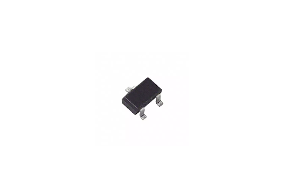
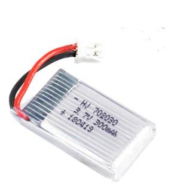

Flysky Transmitter:
|

|
Click Here for manual.
|
Click Here
to purchase online.
|
Features:
|
• Offering good protection against interference while maintaining lower power consumption and
high reliable receiver sensitivity.
• Bidirectional Communication Capable of sending and receiving data, each transmitter is
capable of receiving data from temperature, altitude and many other types of sensors, servo calibration
and i-BUS Support(But in our case, we are only using uni-directional transmission: only to send data
from transmitter to receiver).
• Each transmitter and receiver has it's own unique ID. Once the transmitter and receiver have
been paired, they will only communicate with each other, preventing other systems accidentally
connecting to or interfering with the systems operation.
|
Binding Receiver With Transmitter:
|
We need to bind the transmitter with receiver when we are powering them for first time. Once they are in bind mode,
we do not need to bind them again until a new code is loaded into the microcontroller. The process of binding is
described below:
• Power On the transmitter while holding the bind button.
• If the receiver’s LED is flashing this means it is ready for binding.
• If binding is successful, you can see an RX symbol appears at the top-right side of your transmitter display.
• After successful binding, LED will stop flashing and remains solid.
|
Coreless DC Motor And Propellers:
|
|

|
Click Here to buy online.
|
Specifications Of Coreless Motors:
|
• Material: Metal
• Operating Voltage: 3.7 VDC
• Rated Speed: 4200 RPM
• Shaft Dimension: 3 x 0.5mm (L x D)
• Body Dimension: 6 x 16mm (D x L)
• Total Dimension: 19mm
• Cable Length: 13mm
|
About DC Motors:
|
|
As mentioned before, the key factor to make a drone successful is to make it light weight and
choose the components that can provide more thrust. These motors that we have chosen for our project, meet these requirements. They are efficient in terms of power dissipation and have high RPM. These
motors start rotating at 2.5V, but give full RPM at the voltage around 3.7V to 4.2V.
|
About Propellers:
|
|
Propellers are essential components of a drone because they provide lifting force against the rotation of motors.
One needs to do a deep research before choosing motors and propellers. Even if one buys motors having high
RPM but fail to choose compatible propellers, it will be a failure. The propellers that we have chosen were
best suited for 6*16mm motors. Buy right propeller and motors from the above mentioned link.
|
Its Applications:
|
There are hundreds of applications for ATMEGA328P:
• Used in ARDUINO UNO, ARDUINO NANO and ARDUINO MICRO boards.
• Industrial control systems.
• SMPS and Power Regulation systems.
• Digital data processing.
• Analog signal measuring and manipulations.
• Embedded systems like coffee machine, vending machine.
• Motor control systems.
• Display units.
• Peripheral Interface system.
|
MOSFET(Si2302):
|
|

|
|
Click Here for manual.
|
Click Here to purchase online.
|
For a flight controller we need 4 MOSFETs. As we are using 3.7 V battery, so we need MOSFETs
that can operate on this voltage. We have used SI2302 because of its low power loses and Vgs. These
MOSFETs start conduction at the voltages greater than 2.5 (Vgs voltage). This means that when we apply
the control signal from GPIO pin having the voltage less than 2.5, the MOSFETs will act as an open circuit.
But for voltages greater than 2.5 or 3 they will start conduction, and thus motors will start to rotate.
As each motor is connected to separate MOSFETs, so we can control individual motor by changing the strength
of control signal or voltage at the gate terminal of each MOSFETs.
|
Some Other Basic Components:
|
We also require some of the basic components for this project, including:
SMD Components
• 5V voltage regulator
• One push Button
• Resistor: One 10K and two 470 ohm
• Crystal: One Crystal
• lED’s : Two (3.7V)
• Capacitor: Three 10uF, one 0.1uf and two 22pF
• Male Headers: 14 L-Shape and 6 Stright.
• Female Headers: 6
|
Battery:
|
|

|
Click Here to purchase online.
|
For this project we have used 3.7 V LiPo battery because these batteries are light weight and have
higher charge density than other batteries available in the market. We have actually designed our
circuit that works both on a single battery (3.7 V) and also on two batteries in series(7.4 V). Depending
upon our design requirements, we can use any of the options. More details about our designed circuit
are available Here!
|
Total Cost Of The Components:
|